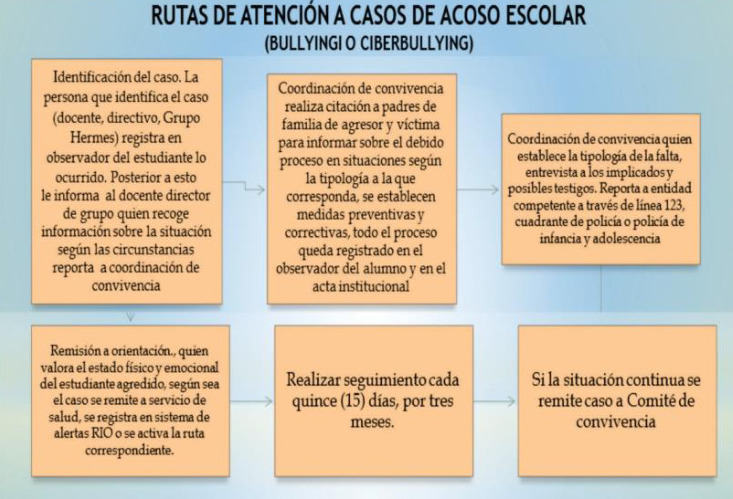
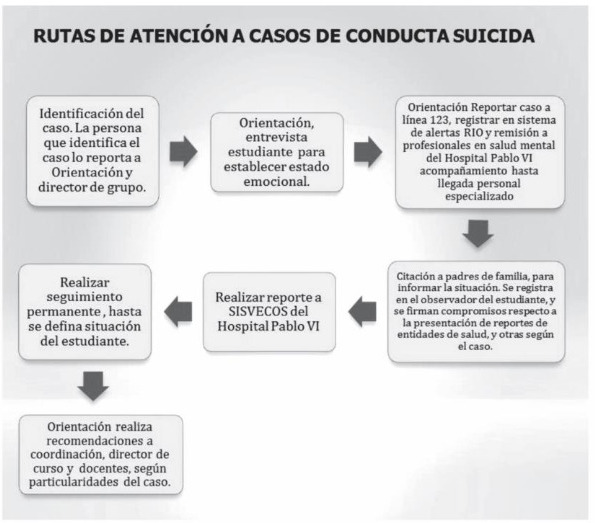
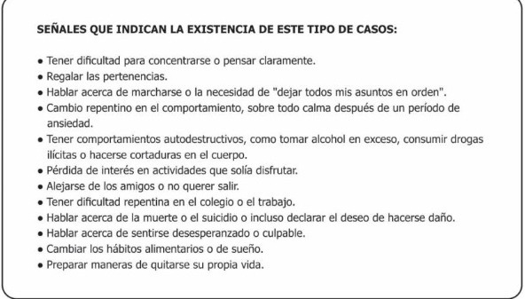
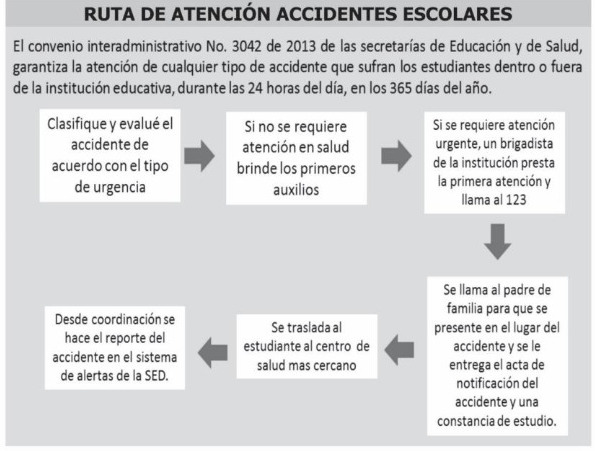
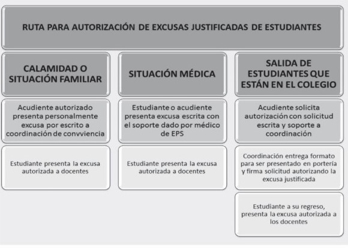

SEÑALES QUE INDICAN LA EXISTENCIA DE ESTE TIPO DE CASOS:
Maltrato físico
- Tiene una lesión (moretones, quemadura, fractura, lesiones en la cabeza o en el abdomen) que no tiene explicación.
- Parece tener muchos accidentes que no siempre son fáciles de explicar.
- Parece temer a los padres u otros adultos, tales como los profesores o las niñeras.
- Parece deprimido(a), retraído(a), o incluso presenta tendencias suicidas.
- Dice que ha sido lastimado por uno de sus padres, o por un cuidador.
Maltrato psicológico
- Demuestra comportamientos extremos, que van de la sumisión al comportamiento intempestivo, de la pasividad a la agresión.
- Se comporta como adulto (por ejemplo, cuidando a otros niños), o demuestra cierto infantilismo (golpeándose la cabeza o meciéndose).
- Está retrasado en su desarrollo físico o emocional.
- Ha intentado suicidarse.
- Dice que no tiene un vínculo afectivo con sus padres.
Negligencia
- Falta a la escuela con frecuencia.
- Pide que le den comida o dinero, o los roba.
- Carece de atención médica o dental, no tiene inmunizaciones o lentes (si los necesita).
- Con frecuencia está sucio y huele mal.
- No tiene ropa suficiente para protegerse del clima.
- Abusa del alcohol y las drogas.
- Dice que no hay nadie en casa que lo pueda cuidar o atender.
- Reincidencia de los padres en incumplir citaciones hechas desde las diferentes instancias del colegio.
Violencia sexual
- Sin causa aparente, aparecen cambios repentinos en el apetito, control de esfínteres.
- Dificultades para caminar o sentarse: sangrados, secreciones intensas, infecciones frecuentes.
- Dificultades de atención, concentración, memoria.
- Estado de hipervigilancia y alerta.
- Fuerte nerviosismo cuando aparece una persona concreta, aunque sea de la familia.
- Tristeza, depresión, ansiedad elevada.
- Dificultades y miedos al ir a dormir. Pesadillas intensas.
- Retraimiento social, desconfianza.
- Erotización elevada, masturbación compulsiva.
- Conocimiento de la sexualidad inapropiado para su edad. Palabras de significado sexual compartidas con otros niños.
- Actitud seductora, actitud exhibicionista.
- Rechazo del propio cuerpo.
- Celos excesivos y control sobre la vida social del niño.
- Inicio de relaciones sexuales antes de los 14 años.

SEÑALES QUE INDICAN LA EXISTENCIA DE ACOSO ESCOLAR:
Desde el ámbito familiar:
- Presencia de lesiones físicas sin explicación.
- Pérdida o daño de pertenencias.
- Cambios de humor muy acusados.
- Tristeza o síntomas de depresión.
- Soledad y falta de interacción con amigos.
- Descenso en el rendimiento escolar.
- Miedo a ir al colegio, o poner excusas para faltar.
- Síntomas psicosomáticos antes de ir al colegio.
- No hablar del colegio.
Desde el medio escolar:
- Ausentismo escolar frecuente.
- Descenso en el rendimiento escolar.
- Apatía, abatimiento, tristeza.
- Exclusión en trabajos grupales.
- Soledad y ausencia de relaciones sociales.
- Risas o murmullos cuando entra en clase o participa.
- Golpes o heridas visibles después del recreo.
- Evita encontrarse con los agresores.
- Nerviosismo al participar en clase.
- Conflictos frecuentes con los mismos compañeros.
Desde el punto de vista de los padres, cuidadores o profesores:
- Ausencia de empatía con el sufrimiento de los demás.
- Comportamiento agresivo y dominante con otros niños.
- Burlarse o mofarse de sus compañeros.
- Incumplimiento de normas y responsabilidades.
- Orgullo por comportamientos agresivos.
Los indicadores para el profesorado de que un alumno es un acosador escolar, podrían ser:
- Falta de cumplimiento de las normas de la clase.
- Burlarse de los demás cuando intervienen en clase.
- Comportamiento agresivo.
- Prepotentes y dominantes con sus compañeros de clase.
- No asumir la responsabilidad de su conducta, ni pedir perdón cuando ha actuado mal.
- Enorgullecerse de su conducta agresiva.




23